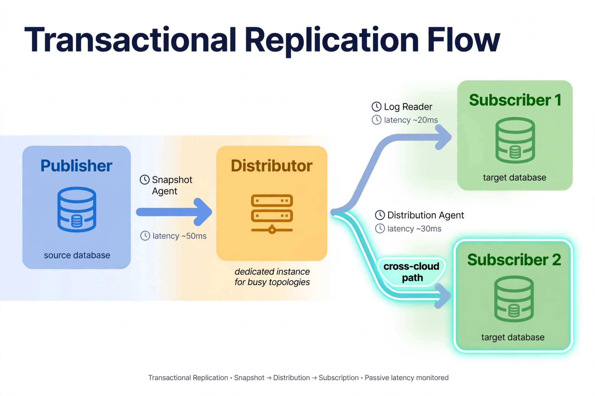

Chapter 21: Distributed SQL Server: Replication and Scale-Out Topologies
Not every scaling problem is solved by a bigger VM. When the workload outgrows a single primary — reporting queries starving OLTP, geographically distributed users needing local reads, or data that must flow between systems — SQL Server's replication and scale-out topologies come into play. This chapter maps the options (readable AG secondaries, transactional replication, distributed AGs, and sharding), their cloud-specific considerations, and how to choose without building a distributed system you cannot operate.
21.1 Readable Secondaries: The First Scale-Out Step
The simplest scale-out is routing read traffic to asynchronous AG secondaries. On EC2, Azure VMs, and GCE you control the full topology: add async replicas in the same region (or cross-region for geographic reads), mark them readable, and split connection strings by workload — ApplicationIntent=ReadOnly sends reporting traffic to secondaries while OLTP stays on the primary. On Azure SQL, the Business Critical tier and Hyperscale provide readable secondaries as a platform feature; on RDS, SQL Server has no read replicas, so this topology requires EC2.
The operational rules: monitor replication lag per secondary (a reporting query against a 10-minute-stale replica is a correctness bug, not a performance feature); size secondaries for the read workload, not as clones of the primary; and remember that readable secondaries still need maintenance (statistics, index maintenance) — they are databases, not free copies. When lag exceeds the application's tolerance, the answer is usually a bigger secondary or less write throughput, not a different topology.
21.2 Transactional Replication: Data Flow Between Systems

Follow the arrows: the Snapshot Agent seeds the subscriber, then the Log Reader feeds the distributor and the Distribution Agent pushes changes to subscribers — each hop annotated with its latency contribution, because in replication the agents are the topology. The distributor gets its own box for a reason: on busy topologies it lives on a dedicated instance, never co-located with a struggling publisher. And the highlighted cross-cloud path is the lowest-drama way to move SQL Server data between clouds — publish on AWS, subscribe on Azure, and the heterogeneous topology just works.
Transactional replication publishes committed transactions from a publisher to subscribers with low latency — the classic pattern for feeding reporting databases, data warehouses, or downstream systems without touching the primary's read capacity. In the cloud, replication works on EC2/Azure VMs/GCE (full control of distributor, agents, and topology) and is limited or unavailable on managed services (RDS supports it with restrictions; Azure SQL Database supports it as a subscriber in some configurations — verify current support before designing around it).
Cloud-specific considerations: the distributor belongs on a dedicated instance for busy topologies (never co-locate the distributor with a struggling publisher); agent jobs become the Chapter 12 automation problem on managed platforms; network latency between publisher and subscriber directly bounds throughput — keep them in the same region unless the use case tolerates lag; and monitor undistributed commands and replication latency as first-class alerts. Replication is also the lowest-drama cross-cloud data movement for SQL Server: publish on AWS, subscribe on Azure, and the heterogeneous topology just works.
21.3 Distributed Availability Groups: Cross-Site and Cross-Cloud
Distributed AGs (Chapter 16's DR mechanism) are also a scale-out mechanism: each participating AG has its own primary, and applications can write to the local primary in each site. This is genuine multi-site write scaling — with the fundamental constraint that the same data cannot be written in two sites simultaneously without conflicts. Use distributed AGs for: DR with a runnable secondary site (the primary use case), geographic read locality (each site serves local reads from its primary), and migrations (the old and new environments as the two AGs, with a controlled cutover). Do not use them for sharding or for write-scaling a single logical dataset — that way lies conflict resolution, and SQL Server has no built-in conflict resolver worth relying on.
21.4 Sharding: The Last Resort
When a single database genuinely cannot hold the workload — tens of terabytes with write throughput beyond one primary — sharding splits the data across multiple databases by a shard key (customer ID, region, tenant). SQL Server has no built-in auto-sharding; you build it with application-level routing, elastic database tools (Azure's shard map manager), or a proxy layer. The costs are permanent: cross-shard queries become application problems, transactions cannot span shards (design for shard-local transactions or sagas), schema changes roll out across every shard (elastic jobs at fleet scale, Chapter 14's discipline), and rebalancing a hot shard is a data migration project. Shard only when you have proven — with measurements, not projections — that vertical scaling and read scale-out are exhausted. Most teams that think they need sharding need a bigger primary and readable secondaries.
21.5 The Physics: Consistency, Latency, and Distance
Every distributed topology trades consistency against latency and availability — the physics does not negotiate. Synchronous replication (sync AG replicas) guarantees zero data loss on failover but makes every commit wait for the network round trip: within a region or AZ this costs single-digit milliseconds; across regions it costs tens to hundreds of milliseconds per commit, which throttles write throughput directly. Asynchronous replication keeps the primary fast but admits lag — seconds under normal conditions, minutes or more when the network or secondary falls behind.
The practical rules: keep synchronous replicas within one region (latency-bounded); use async for anything cross-region; define the application's maximum tolerable staleness in writing and alert on it; and never let a sync secondary sit across a WAN link "temporarily" — temporary becomes permanent, and the latency tax becomes the new normal. When someone proposes synchronous cross-region replication for zero RPO, make them price the commit-latency impact on the workload first. Most businesses choose async with eyes open once they see the numbers.
21.6 Monitoring a Distributed Topology
A distributed topology multiplies the things that can silently degrade. The monitoring baseline: replication/AG lag per secondary (alert on thresholds tied to application tolerance, not round numbers); undistributed commands and replication agent job health; distributor database size and throughput; listener/DNS endpoint resolution from each client region; and per-site resource utilization so a secondary does not become the bottleneck that back-pressures the primary. Build one dashboard per topology showing data flow end to end — publisher to distributor to subscriber, primary to each secondary — because the failure you will debug at 3 AM is always "which link in the chain is behind," and the dashboard should answer it in one glance.
21.7 Choosing: A Decision Framework
| Need | Topology | Cloud notes |
|---|---|---|
| Offload reporting reads | Readable AG secondaries | Needs EC2/VMs/GCE; RDS SQL Server has no read replicas |
| Feed warehouse/downstream | Transactional replication | Full control on VMs; limited on managed services |
| Multi-site writes/DR | Distributed AGs | EC2/VMs/GCE only; no cross-site write conflicts allowed |
| Beyond one primary's capacity | Sharding | Application-built; last resort after measured proof |
Key Takeaways
Test yourself on this chapter
5 questions · instant scoring · explanations included
QueryOptimizer — Self-Hosted SQL Performance Workbench
Execution-plan visualizer · Index advisor · Slow query dashboard · Built for SQL Server